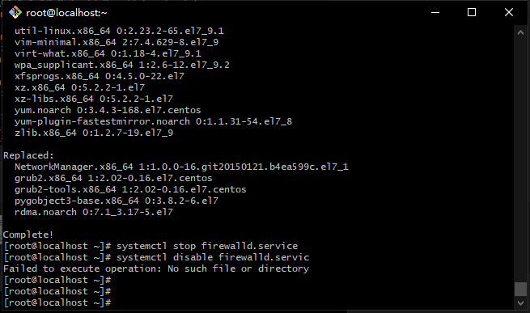
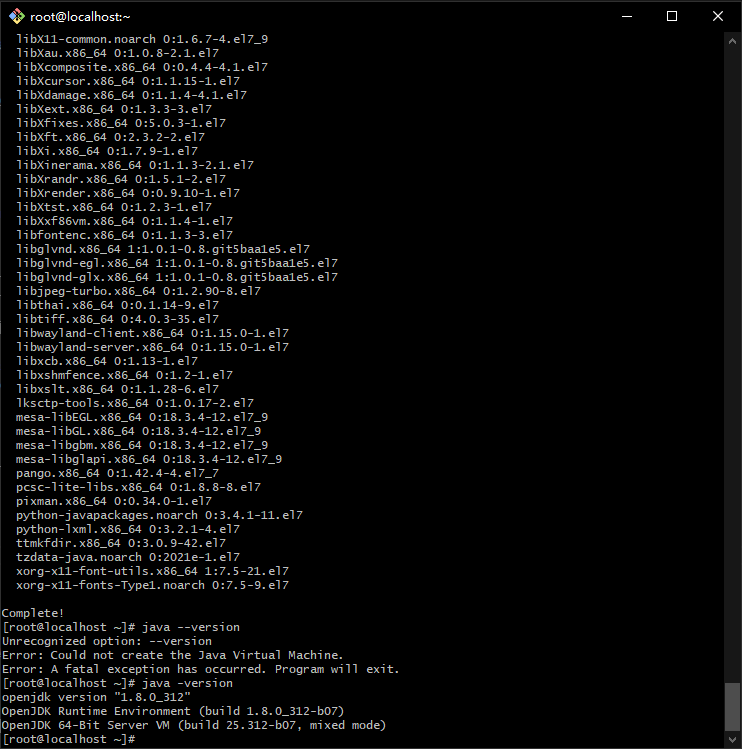
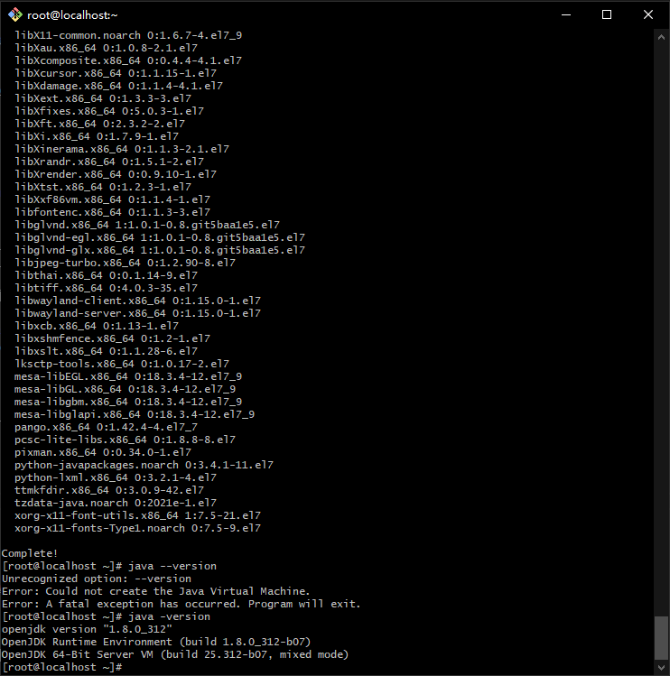
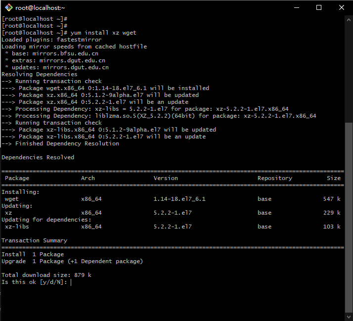
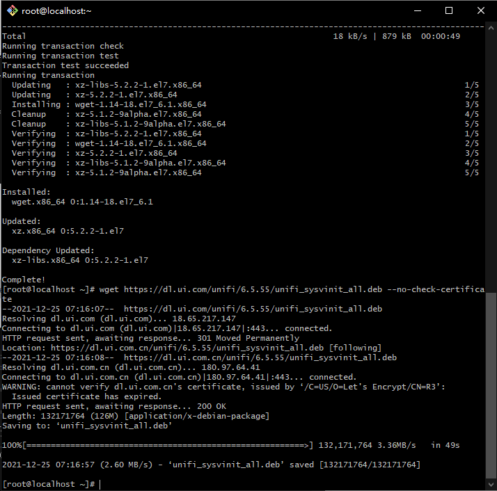

CentOS 7 安装 Unifi Controller 最新版本
1.1 用SSH工具以root管理员身份登录到服务器

1.2 更新yum软件源
yum upadte

1.3 关闭服务器防火墙
systemctl stop firewalld.service
systemctl disable firewalld.service

2.1 添加mongodb软件源
vi /etc/yum.repos.d/mongodb-org-4.4.repo
添加以下内容到mongodb-org.repo
[mongodb-org-4.4]
name=MongoDB Repository
baseurl=https://repo.mongodb.org/yum/redhat/$releasever/mongodb-org/4.4/x86_64/
gpgcheck=1
enabled=1
gpgkey=https://www.mongodb.org/static/pgp/server-4.4.asc
2.2 安装mongodb-org
yum install -y mongodb-org-4.4.1 mongodb-org-server-4.4.1


2.3 设置Mongodb开机启动,并立即运行mongodb服务,检测其状态
systemctl enable mongod.service #添加到开机启动
systemctl start mongod.service #启动mongod
systemctl status mongod #查看mongod运行状态

3.1 安装JAVA JDK环境
yum install -y java-1.8.0-openjdk
 

3.2 检测Java安装版本信息
java -version
4.1 安装UniFi Controller
准备工作：先安装好wget下载工具,xz解压工具
yum install xz wget

下载unifi controller 6.5.55
到 https://www.ui.com/download/unifi/ 下载最新Linux版UniFi控制器
wget https://dl.ui.com/unifi/6.5.55/unifi_sysvinit_all.deb --no-check-certificate

解压文件并unifi controller
mkdir tools && mv unifi_sysvinit_all.deb tools && cd tools
ar -xv unifi_sysvinit_all.deb && tar -vxf data.tar.xz
cp -fr usr/lib/unifi /usr/local/
cd /usr/local/unifi/bin && ln -fs /usr/bin/mongod mongod #创建链接

https://dl.ui.com/unifi/6.5.55/unifi_sysvinit_all.deb
用解压软件打开，360RAR之类的软件打开，然后把unifi目录从unifi_sysvinit_all\usr\lib\提取出来 把文件上传到 /usr/local/ 目录
编辑unifi系统服务
vi /etc/systemd/system/unifi.service
添加以下内容到unifi.service
[Unit]
Description=UniFi AP Web Controller
After=syslog.target network.target
[Service]
Type=simple
User=root
ExecStart=/usr/bin/java -Xmx1024M -jar /usr/local/unifi/lib/ace.jar start
ExecStop=/usr/bin/java -jar /usr/local/unifi/lib/ace.jar stop
SuccessExitStatus=143
[Install]
WantedBy=multi-user.target
- 启动
systemctl enable unifi.service #添加到开机启动 systemctl start unifi.service systemctl status unifi - 到腾讯云后台添加防火墙规则，把3478,8080,8443,8843,8880添加到规则内放行端口。
- 在网页打开https://IP:8443